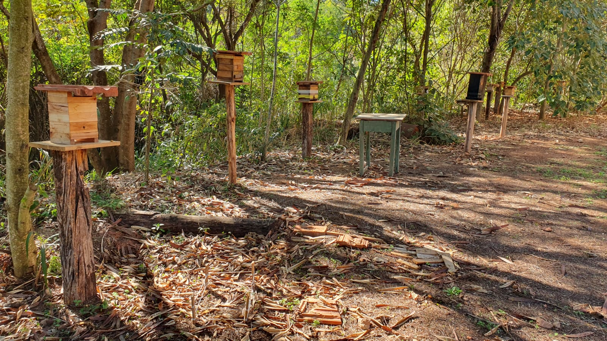

Abelha Preguiça Mirim
(Melipona quadrifasciata)
A abelha preguiça mirim, ou abelha-sem-ferrão, é uma pequena e menos agressiva espécie de abelha que desempenha um papel vital na polinização e na manutenção da biodiversidade. Vivendo em colônias, essas abelhas têm funções específicas, como coleta de néctar e construção de favos. Além de sua importância ecológica, elas contribuem significativamente para a produção de frutas e vegetais, tornando-se essenciais para o equilíbrio dos ecossistemas.
